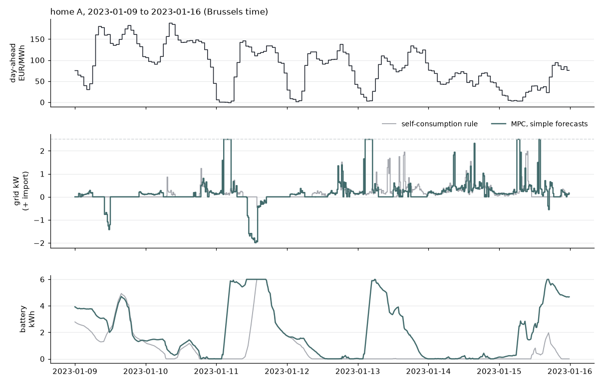

Scheduling a home battery against dynamic prices and a capacity tariff
A household with solar panels, a battery and a dynamic contract pays for energy by the hour, for grid use by the kWh, and for its highest 15-minute import of each month. The built-in rule of most batteries, "store the solar surplus, use it later", sees none of that. How much does planning against prices and the peak save, over a full year?
Yearly cost by strategy
What the figures say
- The short price horizon costs almost nothing. Knowing prices only until tomorrow midnight, with true consumption and solar, the planner lands within a few euros of perfect foresight over the whole year.
- The forecasts decide everything. With naive forecasts (last week's average consumption, yesterday's solar) the planner does no better than the simple rule: what it gains on prices and peaks, it loses to surprises, extra cycling and higher monthly peaks.
- Both forecasts matter. Making only one of them exact closes a third to a half of the gap; it takes both to close it.
- So the next step is clear: a weather-based solar forecast and a better consumption model, judged by what they save in euros, not by their forecast error alone.
One winter week
Home A, 9 to 15 January 2023 (week chosen before looking at the results). Little sun: the rule leaves the battery empty most of the week. The planner charges when prices dip, up to the 2.5 kW that the minimum capacity charge pays for anyway, and discharges when prices rise.

All figures
How it works
- Linear program (HiGHS): per 15 minutes, charge, discharge, import, export, curtailment and state of charge; per month, the import peak billed by the capacity tariff. Raising the peak costs only what goes above the peak already reached that month.
- Receding horizon: every hour the plan is redone until the last published day-ahead price (prices for tomorrow come out around 13:00), and only its first hour is applied.
- Between replans: every 15 minutes the battery holds the grid exchange the plan expected, absorbing the forecast error, and never lets the import go past the monthly peak the plan allowed.
- Simple forecasts: consumption = mean of the same quarter-hour over the last 7 days; solar = same quarter-hour yesterday.
Limits
- Simulation: no real inverter, no communication delays, battery modelled by its efficiency and a wear cost per kWh.
- Mixed sources: 2016 households, 2023 prices and weather, 2025 grid tariffs. Each is real; together they make a plausible household, not a measured one.
- Two households, without heat pump or electric car: the capacity tariff weighs less than in an electrified home.
- Household bill only: no balancing markets, no fleet aggregation.